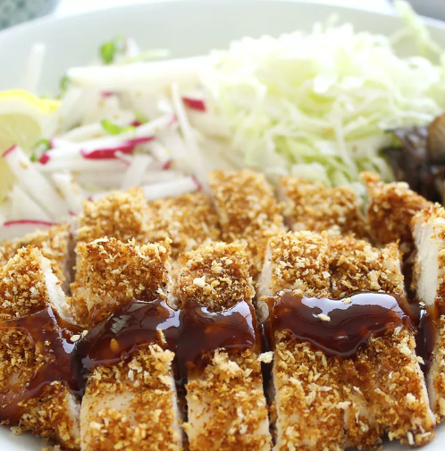

Chicken Katsu

Description
Chicken katsu is Japanese-style fried chicken. This can also be used to make tonkatsu by using pork cutlets instead of chicken.
Serve with white rice and tonkatsu sauce.
Katsu is a Japanese dish of crispy fried cutlets coated with Panko bread crumbs.
Popular varieties are chicken katsu (like this recipe) and tonkatsu (which is made with pork).
Ingredients
- 4 skinless, boneless chicken breast halves - pounded to 1/2 inch thickness
- Salt
- Pepper
- 2 tablespoons all-purpose flour
- 1 egg, beaten
- 1 cup Panko bread crumbs
- 1 cup of neutral oil with high smoke point, such as canola or vegetable oil
Steps
- Season chicken breasts on both sides with salt and pepper.
- Place flour, beaten egg, and panko crumbs into separate shallow dishes.
- Coat chicken breasts in flour, shaking off any excess; dip into egg, and then press into panko crumbs until well coated on both sides.
- Place chicken in the hot oil, and fry until golden brown, 3 or 4 minutes per side.
- Transfer to a paper towel-lined plate to drain.
Source